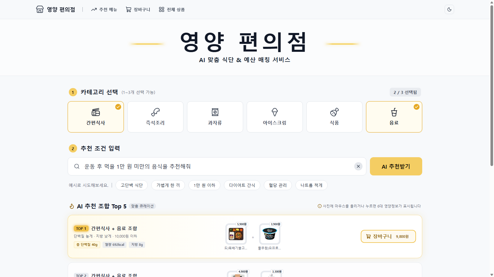
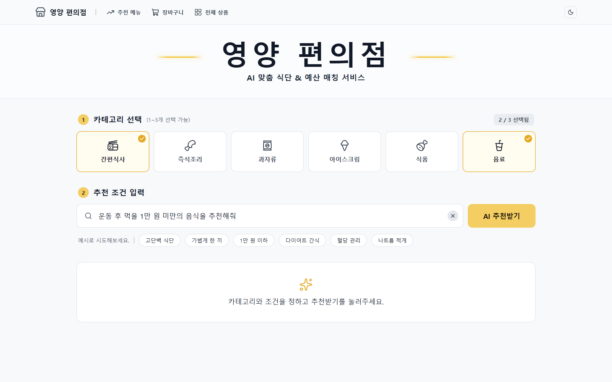
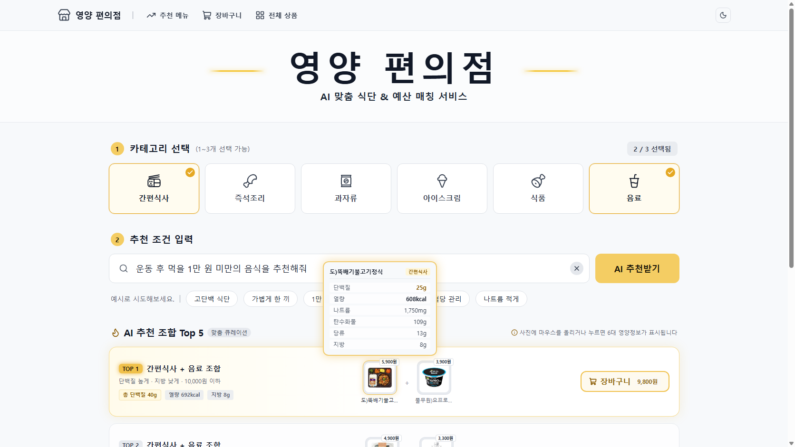

LLM Project · 2026
영양 편의점
평소 말투로 상황과 예산을 말하면,
CU 상품 조합 Top 5를 영양 합계와 함께 추천합니다.

Problem
편의점에서 “뭐 먹지”는 생각보다 어렵습니다
운동, 다이어트, 예산처럼 목적이 있을수록 영양성분표를 하나씩 보고 가격을 더해 봐야 합니다. 사람들은 이렇게 묻습니다.
“운동 후 먹을 1만 원 미만의 음식을 추천해줘”
“5000원으로 든든한 한 끼 추천해줘”
“내일 얼굴 안 붓게 짠 거 말고 야식 추천해줘”
| 기존 방법 | 할 수 있는 것 | 부족한 점 |
|---|---|---|
| 편의점 앱 (포켓CU 등) | 상품·행사·재고 조회 | 목적별 조합 추천과 영양 합산이 없음 |
| 범용 LLM 챗봇 | 자연어로 조합 추천 | 실제 상품·가격·영양을 추정해 틀릴 수 있음(환각) |
| 편의점 행사 정보 앱 | 여러 편의점 행사 비교 | 행사 중심, 영양 기반 추천이 없음 |
| 식단 기록 앱 | 직접 검색 후 기록 | 사기 전에 고르는 단계는 돕지 않음 |
| 영양 편의점 | 목적·예산에 맞는 조합과 정확한 영양 합계. LLM은 문장 해석만, 숫자는 DB와 코드가 계산 | |
Demo
카테고리를 고르고, 한 문장만 쓰면 됩니다
사용자는 카테고리(1~3개)와 문장을 넣고, 조합별 가격·영양 합계가 담긴 추천 카드 5개를 받습니다. 관계없는 말을 하면 추천 대신 안내 문구가 나옵니다.






휴대폰과 다크 모드
같은 화면이 휴대폰 폭에 맞게 바뀌고, 버튼 하나로 다크(민트 강조)와 화이트(노란색 강조)를 전환합니다.
How it works
문장 하나가 추천 카드 5개가 되기까지
예시 입력 “운동 끝나고 5천원으로 먹을 거 추천해줘” + 간편식사, 음료를 따라가 봅니다.
문장 해석
파인튜닝한 A.X가 영양 조건 2개를 뽑고, 예산은 규칙 코드가 뽑습니다.
지방 low
예산 5,000원
가격 필터
예산이 있으면 단품 가격 상한을 검색 조건에 넣습니다.
DB 조회
고른 카테고리마다 후보 상품을 꺼냅니다. 소스·식재료 24개는 제외합니다.
음료 404개
Top 5 선정
카테고리별 1개씩 조합하고, 영양 0.7 + 가격 0.3 점수로 순위를 매깁니다.
→ Top 5
화면 표시
순위별 상품, 합계 가격, 영양 점수, 행사(1+1·2+1)를 카드로 보여 줍니다.
4,900원
원칙: LLM은 문장을 조건으로 바꾸는 일만 합니다. 가격과 영양 합계는 모두 DB 값으로 코드가 계산하므로, 숫자를 지어내지 않습니다.
식약처 공공 DB는 가격·행사 정보가 없고 편의점 상품명과 맞지 않아, 실제 판매 라벨을 직접 읽는 방식으로 DB를 만들었습니다.
My part · 박하영
문장을 추천 조건으로 바꾸는 모델
사람이 쓴 문장에서 “어떤 영양소를 높게, 어떤 것을 낮게”를 뽑는 부분을 맡았습니다. 모델 선정, 학습 데이터 설계, QLoRA 파인튜닝과 평가, 그리고 팀원이 바로 쓰는 함수 parse_query까지 만들었습니다.
parse_query(문장)
→ {"budget": 5000,
"nutrients": {"단백질": "high", "지방": "low"}}
- 영양소 6개(열량·단백질·나트륨·탄수화물·당류·지방) 중 2개와 방향(high/low)은 모델이 뽑습니다.
- 예산 금액은 모델을 쓰지 않고 규칙 코드가 뽑습니다.
- 인사나 잡담처럼 관계없는 문장이면
None과 이유를 돌려줍니다.
맡은 일
- 요청 해석 데이터 설계·정제 (학습 2,820문장, 팀 라벨 기준 정리)
- A.X-4.0-Light QLoRA 파인튜닝과 평가
parse_query함수와 입력 안전장치- dev·test 평가 설계 (test는 마지막에 1회만 측정)
정확도를 14.4%에서 86.1%까지
완전 정확도는 영양소 2개와 방향이 모두 맞은 문장의 비율입니다(순서 무관). 프롬프트만 고쳐서는 44% 근처에서 멈췄고, 파인튜닝으로 이 한계를 넘었습니다.
14.4% → 44.0%에는 dev 정답 라벨을 짝 규칙표로 통일한 효과(216문장 중 91문장 라벨 변경)가 함께 들어 있습니다. 첫 줄은 성분 1개를 뽑는 이전 과제라 직접 비교하지 않습니다.
어떻게 학습했나
모델과 데이터
- 모델
- skt/A.X-4.0-Light (7B, Qwen2.5 기반 한국어 모델)
- 방식
- QLoRA · 4bit NF4 + LoRA r16, α32
- 학습률
- 2e-4 (cosine), 유효 배치 16
- 데이터
- 94상황 × 30문장 = 2,820문장
학습 2,550 / 검증 270 (상황 단위 분리) - 장비
- RTX 4090 1장, 약 56분
dev·test 문장은 학습 문장과 상황이 겹치지 않게 나눴습니다. 말투는 구어체, 줄임말·오타, 예산 포함 등 7가지입니다.
1 epoch 모델을 고른 이유
검증 정확도는 1 epoch에서 가장 높았고, 그 뒤로는 학습 문장만 외우며 새 문장에 약해졌습니다(과적합). 3번 연속 오르지 않아 4 epoch에서 멈추고 1 epoch 모델을 골랐습니다.
파인튜닝 효과와 안전장치
같은 조건에서 비교한 파인튜닝 효과 (test 240문장)
두 모델 모두 4bit, 같은 프롬프트, 같은 PC에서 측정해 +23.3%p를 파인튜닝 효과로 말할 수 있습니다. 예산이 들어간 58문장에서는 53.4% → 86.2%로 차이가 더 컸습니다. 파인튜닝 모델은 JSON 형식 오류도 0건이었습니다.
잡담에 상품을 추천하던 문제
모델은 어떤 문장이든 영양소 2개를 고르도록 학습되어, “오늘 날씨 어때”에도 열량↓ 지방↓를 냈습니다. 다시 학습하지 않고 두 단계로 막았습니다.
- 규칙 검사: 인사·요청어만 있으면 모델을 부르지 않고 차단
- 시스템 프롬프트: 학습 프롬프트 끝에 규칙 추가
왜 A.X였나
선정 기준
- 한국어: 한국어 벤치마크 3종 모두 기반 모델(Qwen2.5)보다 높음 (KMMLU +14.6점)
- 크기: 7B라 4bit로 줄이면 RTX 4060 8GB 노트북에서 시연 가능
- 라이선스: Apache 2.0으로 수정·배포 부담이 적음
- 구조: transformers 기본 지원으로 QLoRA를 바로 적용
EXAONE과 같은 조건으로 비교 (팀원 실험)
같은 데이터로 EXAONE-3.5-7.8B도 파인튜닝해 비교했습니다. test 정확도는 EXAONE 88.3%, A.X 85.8%였지만 통계적으로 구분되지 않았습니다(McNemar p=0.29).
운동·성장·수유처럼 핵심 상황에 많이 나오는 단백질 문장 74개에서는 A.X가 89.2%, EXAONE이 75.7%로 차이가 커서 A.X를 유지했습니다.
Results
숫자로 본 결과
처음 정한 성공 기준은 test 완전 정확도 80%였습니다. 서비스용으로 모델을 양자화한 뒤에도 정확도는 떨어지지 않았습니다.
양자화(서비스 준비)는 팀원이 맡았습니다. 양자화 전후 test 차이는 통계적으로 유의하지 않습니다.
Limits & Next
아직 부족한 점과 다음 단계
한계
- 카테고리까지 문장에서 뽑으려던 계획은 시간 문제로 구현하지 못해, 화면에서 직접 고릅니다.
- test는 12개 상황, 작성자 1명의 240문장이라 점수의 오차가 큽니다.
- 영양소 단어가 없는 정상 요청(“우는 아이 그치게 할 만한 거”)이 가끔 관계없는 문장으로 걸러집니다.
- “몇 천원”처럼 모호한 금액은 예산으로 읽지 못합니다.
- 학습을 충분히 더 진행하지 못해 성능을 올릴 여지가 남아 있습니다.
다음 단계
- 문장 한 줄에서 카테고리도 함께 뽑도록 확장하고, 학습 데이터를 늘려 다시 학습
- 새 test 세트를 만들어 약한 상황(예: 탄수화물을 줄이는 날)을 다시 평가
- CU 외 다른 편의점으로 영양 DB 확장
- 알레르기·건강 목적 같은 조건 추가
Team & Links
팀 아이넷
K-Digital Training LLM 과정에서 4명이 10일 동안 만들었습니다. GitHub에서 브랜치 → PR → 리뷰 순서로 협업했습니다.
| 이름 | 역할 | 담당 업무 |
|---|---|---|
| 박하영 | 자연어 처리, LLM | 요청 해석 데이터 설계·정제, A.X QLoRA 파인튜닝·평가, parse_query 함수와 입력 안전장치 |
| 김종호 | 모델 비교, API | EXAONE 비교 평가, test 문장 240개 작성, 가격(예산) 규칙, FastAPI 서버 |
| 이규남 | Vision LLM, DB, 추천 엔진 | 이미지 크롤링, Vision LLM 판독, 상품 DB, 후보 검색·Top 5 엔진, 코드 통합 |
| 조혁준 | UI/UX, 양자화 | 웹 화면과 안내 문구, CU 데이터 수집, 모델 양자화 |